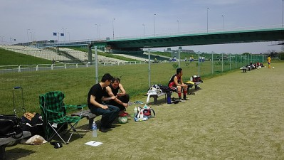

謹啓
平素は格別のご高配を賜り厚く御礼申し上げます。
15日の練習及びBBQお疲れ様でした。
言い出しっぺの私は、母親がどこからかいただいてきた謎の病に侵され、家族全員が40度の高熱を出し全滅するという緊急事態により不参加を余儀なくされ、社会人として基本である体調管理の不行き届きのこの事態をまさに不徳の致すところと猛省しております。
さらに、金曜の夜から食事を取っていなかった私の体重は83kg→80kgへと減量し、目標であった70kg代への到達もあと少し！ということで、きっと今後のプレイにもますます磨きがかかってくるのでは？ひょっとしたらBBQに参加することにより、83kg→86kgなんてことも可能性としては十二分に考え得る状態であったこと等踏まえましても、チームにとっては結果的に良かったのではなかろうか？いや、そうに違いない！きっとそうだ！という結論に達しましたので、このたびに限り、寛大なるご措置をお願い申し上げます。という文章をコーラを飲みながらピザを片手に書いておる次第であります。
P.S.
「ワカチコ」とは「若さ・力・根性」を意味するそうです。
今日は練習後のBBQの関係でいつもとは違う場所になりましたが、最初に場所を取ってた所はほんと草も多く、坂になってる感じもあって出来るやろかと思ってたら、枚方大橋の反対側で野球をしていたチームさんが半分くらいに縮小し、奥が開いたので使わしてもらい、結果的には人数にしてはちょっと小さかったかもですが、いい芝のところですることができました。
今日は二日酔いの人も含めて合計で１８名の参加がありました。お天気も良くて涼しい風が吹いていていい感じでしたね。
２時間という時間があったので、最初からミニゲをしましたがいきなりするとやっぱり動けないっすね。最後の方は久々に吊りそうになりました。
うーん、ハイライトは先週ほどなかったかな。まあ、お約束通りタクちゃんがハンドしたり、おかちゃんをいじめてたりとはあったけど（笑）。まあ、それを喜びに感じているドＭのおかちゃんも変やけど（笑）
休んでいたら、誰の恋人？愛人？って思ったけど、お姉さんが近づいてきてジュースいかがっすかって、最初なんやろって思ってたら、翼が生える？レッドブルーの試飲キャンペーンで回っていたらしくで、多分数をこなさないと駄目なんで向こうさんからしたらおいしい状態だったのでは（笑）
まあ、そんな感じでミニゲの練習は終了しました。
さて、その後BBQですが・・・
まず最初に言い出しっぺのわかちこ、体調不良で欠席ってなんでやねん（怒）、先週しんどい中、頑張って実家行って道具積んで大変だったのにさ（涙）、罰が必要とのことで内容はまえちゃんに一任したのでお楽しみに(笑）
BBQについてはメンバーで参加は１２名、せっかくの機会なのに帰ったギター侍は切腹（笑）
当初、僕が用意した道具が足りるのかとか思ったりしてたけど何とか大丈夫っぽかったし、もりちゃんとかが小物用意してくれたり、みんなお水持ってきてくれたりと協力ありがとうございました。
何人かのメンバーさんはご家族も参加してくれました。暑い中、参加して頂きありがとうございました。楽しい時間をお過ごし頂けたら良かったかなあと思います。
買い出しに行って、どれくらいだろうと悩みながら買いましたが結果的には食材が野菜少しと焼きそば分、後は焼き肉のたれが残ってしまいましたがお肉とかはいい感じでした。残った食材を持って帰ってくれたよっしゃんありがとう、また出たごみを各自持って帰ってくれた方も大変助かりました。
良かったらまたたまに出来ればと思います。（そのたびに道具用意するのが億劫だけど・・・）
参加された方、良かったら感想とかカキコしてもらえたらと思います。奥さんもこの掲示板を見ているらしいまっとんは絶対で（笑）
適当に撮った写真を第二掲示板から見れるようにしていますので、参加された方も今回は残念ながらの人もよかったら見てください。テキヤの大将のわっちの雄姿やその子分のタカさんやタクちゃんとかの焼き係が様になっている写真とかありますよ～（結構、隠し撮り？ばっかやけど）
今日の反省、お酒飲まない僕には飲む人の基準がわからない。１本を１５秒で飲むとか想像できない、まえちゃんごめんよ。今度はヤスさんとセットの場合は２０本以上必要って頭入れときます。ゆっきーが来たら３人で５０本ですかね？（笑）
当面、ネタでディスられるのは覚悟・・、でも原因はやっぱりヤスさんが来なかったからということになったので良しとしましょう。（笑）
来週、再来週と試合が続きます。早めに出欠登録をお願いします。６月はまだグランドが不明です。確保できなければ試合もないかもしれませんがご容赦願います。
本日の練習とBBQに参加された皆さん、お疲れ様でした。
あ、ちなみにホームページのメイン写真変更になったのみんな気づいているかな？
今日も先週に引き続き、許可じじいが小言行ってきたわーしかも時間差。ほんまうんざりですわ。
ゆっきーが「ちっちゃなことは気にしない、うーんわかちこわかちこ」って言ってくれんかったのが残念やったなあ（笑）
今日は合計で１６名の参加がありました。お天気もいい感じでしたが、下の草が伸びてきてますね。これから人数多い時は奥の場所でした方がいいかなってちょっと思いました。シロツメグサでボール埋まったり、けられへんし（笑）
んで、今日は最初は二手に分かれて鳥かごでＵＰして、その後シュート練習しました。最初はポストシュート、その後はボールを受けてデフェンスを交わしてシュートってみたいな感じをしましたが、最初のポストシュートの時、ポストしてたごろうさんがいきなりこけてたのはＷＨＹ？（笑）
その後はミニゴールで狭い範囲での３対３をしました。ちょっと前に同じように２対２をしたことありますが、その時よりかはボールの出しどころはありましたが、やっぱりマンツーマンでマークだと上手く相手から外れてボールを貰うような動きが必要かなって思います。
その後は広めにコートを取って少し早いですがミニゲをしました。今日の見どころは、やっぱり第一はまえちゃんとテラさんのやり合いですかね。まえちゃんが攻めでテラさんが守りが多かったけど、股通されないようにテラさんの極端な内またディフェンスがめちゃおもろかった。止めても態勢が崩れてまたまえちゃんにボールが戻ってと、そういったシーンが５回以上はあったような気が・・・。
あとはもりちゃんタイマーが作動した？のにまえちゃんが鬼の掛け声。おかちゃんがいきなりずっこけたりとかミニゲの前のプレーとかでズボンがえらいことになってセクシーショット満載でした、そんなおかちゃんを鬼のようなパスと言葉で走らせまくったドＭなたくちゃんもおもろかったっす。
まあ、そんな感じで今日は終わりました。
さて、来週は練習後に急遽ＢＢＱをすることになりました。集合場所とかも違いますし、お酒を飲む人は絶対に車で来ないようにお願いします。
本日参加された皆さんお疲れ様でした。
久々、ボール蹴れてよかったです。今日ひざの調子悪くなったら引退かなぁ？って考えながら練習でてきたんですが、ボチボチですがもう少し続けたいなぁって思うくらい楽しかったです！ヒザと上手く付き合いながらもう少しやっていきます。改めてよろしくお願いします
はあ、来週から許可証じじいとやりあわなあかんのかあ。
今日はGWの途中で人数も少ないのかなって思ってましたが早退も含めて１３名の参加がありました。特に久々参加のスケさんやシゲさんの姿を見れたのは良かったですね。
個人的には朝まで歌いに行ってて、ほとんど寝ずに参加したから、体が動かんかった（涙）
お天気もいい感じで涼しい風も吹いてきていい感じでした。ちょっと草が生えてきているところもありましたね。癒しの木が作ってくれる影もこれからは重要になってきますね。
最初はシュート練習でした。いつものポストシュートではなくて、ワンツーみたいな感じでしました。最後のミニゲでも同じような場面もあったのでいい練習になったのではと思います。途中でボール受けて振りむいてシュートみたいなのに変更しました。
次はセンタリングです。真ん中からサイドに蹴って、サイドがいろんな形で走ったりその場でボールをあげたりとでしたが、結構サイドからはいいボールが入って来ていいヘディングシュートとかもありましたね。僕も豪快にこけたボレー失敗と惜しいボレーシュートがありました。サイドはタクちゃんはちと修行やな（笑）
んで、早退の人も居たので早目にミニゲしました。最近よりかは少し狭い感じでしましたが、当初はごろうさんが絶好調でしたが、草むらに豪快にこけたりと絶叫したりと一人で空回りもしてましたね（笑）。なかやんがクロスをヘディングで綺麗にゴール決めたり、まえちゃんとテラさんがコンビネーションでゴールを決めたり、テラさんが自陣ゴール前でボールをカットしてどや顔してたらスケさんに詰められてそのままゴール決められたり、もりちゃんがいつも通りやっちまったなあーの後に倒れこんだりとかいろいろありましたが、今日はまえちゃんに「ネタやろ」って突っ込まれていたタクちゃんのハンド四連発が一番印象に残ってますね。あれはきっとキーパーしたいというまんちゃんへの挑戦状なんでしょう（笑）、っていいながら僕も助さんにボールを蹴りあげられて避けようがなくボールが当たった瞬間に周囲から「ハンド、ハンド」の合唱、結局オチに使われるのかあ（涙）
まあ、そんな感じで１１：３０に早退の人に合わせて早めに終わりました。参加された皆さん、お疲れ様でした。
遅くなりましたが日曜日の試合お疲れ様でした。 久しぶりにボール蹴ったので非常に楽しかったです。
練習無しのイキナリ試合やったんで、体の各部が未だにギシギシ言うてます（涙）
何でか左肩が一番痛い！ 腕上がらん！！
試合は１本目だけやったんですが、内容はあまり覚えてないなぁ～。
スガちゃんのシュートを詰めきれなかった事と足元フラフラやった事しか出てこない。。。
でも結構攻めてたんと違うかな～？点入らなかった事が不思議な位でしたね。
とにかく体力を戻さないと！と痛感しました。
舞州人さん戦はお疲れ様でした。
最高のサッカー日和でしたが自分の内容は
課題がたくさん出た試合だったなぁー。
せっかく取ってもらった得点分取られて
しまいました。
1点目は名手てらさんのマークが一瞬外れた
瞬間すぐにシュート体制に入りそのまま強烈
なミドル。左手中指に当たったので止まった
かなと思ったけど勢い衰えず決まってしまい
ました。相手があとワンタッチ持っててくれ
ればてらさんが取り返せてたと思いますが
多分それが分かっててすぐシュートを打った
んだと思います。さすが???
2本目の試合で同じ方のシュートを
正面でとりましたが余裕で取れると思ってた
ら脇を弾かれて膝で何とか止まってました。
代表と同じ重くて伸びるシュートだったなぁ。
2点目はごめんなさい。自分のゴールキックが
あまりにも飛ばなさすぎて唖然としてしまい
空いた口がふさがらずゴールマウスまでポッカリ
開けてしまいました。マジで??
キック次回までに直しておきます。わだっちの
ナイスゴールチャラにしてゴメン???
3点目は覚えてねぇー。
代表また近いうちに舞州人さんとのマッチ組んで
ください。お願いします。

昨日は雨が降っててその影響があるかなって思ってましたが、朝から太陽も照っていて、土グランドじゃないのもあっていい感じで出来ましたね。
今日は舞洲人さんのご招待により、練習試合をしました。お誘い頂いた舞洲人さんありがとうございました。
今日はドタキャンとかあったりで早退を含めて、合計で１７名の参加がありました。まんちゃんは前回と同じくキーパーでお願いして、後は８対８を適当に分け、相互に助っ人、最後の５本目は混在って感じでしたね。２０分２本、１５分３本をしました。
試合ごとに簡単に振り返りたいと思います。
１試合目ですが、何といってもスガちゃんの空回り劇場でしたね～。１本目はキーパーのミスキックをペナエリア内で取って１対１、シュートするも止められる。２本目は自らドリブルでシュートしたらポストにカーン、３本目はこぼれ球を強烈なライナーミドルシュートを打ったタカさんのボールを奪って？ゴール前でシュートするも決まらずと、やっぱりこっすいシュートじゃないと駄目なんかな（笑）
後はテラさんとか惜しいシュートとかあって、キーパーしてたまんちゃんも１回しか触ってなくて全体的にうちが攻めていた感じがします。
僕もスイーパーの位置でボール取って、前ががら空きだから延々と左サイドを駆け上がって行って、中見たらスガちゃんとかおったから、クロスを上げたんだけど上げた瞬間「ごめーん」ってゴールに向かってゴールバーにカーン。まあ、入ったら入ったでまた何を言われるかだからよかったかも（笑）。でも１試合目であの走りがその後も凄く影響して動けんようになってしまった。
１試合で早退だった久々の参加のヒロさんが果敢にゴール前に走りこんで、でもやっぱり久しぶりもあって足がもつれたりして、スガちゃん以上に「あいだ、あいだ」と言ってたのが印象的でした。よければ久々参加のヒロさんの感想をお待ちしています。
結果的には攻めきれず、双方ともに得点なしでした。
２本目はフォーメーションを４－３－３にしたみたいだけど、助っ人でセンターバックしてたけどボランチのところぽっかり空いて結構しんどかった。試合後半、交代して外から見てたけどまんちゃんも結構セービングとかしたりで１試合目とは違って押され気味でしたね。
わっちが吹っ飛んだのがおもろかった（笑）、まあそれでもしのぎきってこの試合も得点なしでした。
３本目ですが、フォーメーションで２トップにして僕は左側でしたが、相手のボールをカットしてそのまま左サイドにドリブリして、中を見たら逆サイドにおかちゃん居たからクロスしようとしたらデフェンスに当たってまた僕のところにボールが来て、デフェンスを交わして中に切り込みながら２人くらい交わして前見たら誰も味方が見えなくて、反対にゴールが開いていたので腰を回転させてシュート打ったらいい感じで決まりました。でもほんとどちらかと言えばラストパスを出したかったんだよ～。
決まって戻った時に「ナイシュー」って祝福してくれたのはテラさんくらいで、「さあ、切り替えよう」って、おい（笑）。こんないじられる代表のチームでいいのだろうかねえ（涙）
もう１点入りました。わだっち、やったね。相手がデフェンスラインで右から左へ横パスしたので、２人目のところで僕がプレッシャー掛けに行ったら、さらに横へあわててパスして、それをデフェンスが慌てて、そこに詰めていたわだっちが奪って、キーパーと１対１、冷静に決めました。ハマさん、当分はわだっち殿と呼んでくださいね（笑）
でも反対に１点決められましたね。結構遠くからの予想外のシュートで、バックもキーパーも虚を突かれて動けずに狙いすましたゴロのシュートを決められちゃいました。
４本目ですが、試合開始早々、わっちが右サイドから駆け上がって反対に居るよっしゃんに目がけてクロスかなって思ったら、キーパーもそう思ってた感じで、前に出ていたところをキーパーとゴールの間に狙いすましたお見事なシュートが決まりました。
その後もわっちが結構キープしたりで１点取った後は接待パスもしたりと、さすがわっちリーダーっすね。ぜひカキコをお待ちしています。
最初にチームリーダーをわっちでって僕が言ったらわだっちが「する感じに見えへん」ってツッコミがおもろかったっす。
後はなかやんが前線で奮闘してたのが印象に残りました。
相手の代表さんの上手いトラップからテラさんが交わされてかなり遠めから強烈なシュートを打たれ、決められましたが、あれは相手さんがお見事だったと思います。
最後は５本目ですが、正直あんまり覚えてないっす。１点取られたのも遠い所からの意表をついたシュートでしたね。ミドルを打たれるのは前にスペースがあるからなので、やっぱり普段なれていない人もいるので仕方ないですがボランチとかバックがコースをふさぐことが大切だなって思いました。
スガちゃんからのコーナーでおかちゃんのヘディングシュートがギリギリでクリアされたのは惜しかったですね。
まあ、そんな一日でした。参加された皆さん、お疲れ様でした。
画像はよからぬ密談をする悪代官と越後屋とその子分です（笑）「おぬしも悪よのう」（笑）
代表、いつもファンの皆のために活動報告ありがとうございます！
毎回楽しく読ませてもらっています。写真もつけて頂いてありがとうございます。カメラ目線ではないですが、奇跡的に3枚目の右側に写っていました。
2回目の対外試合に参加させていただきました。天気もよくてすごく良いグランドでしたね！
またやりたいですね♪
今回は2チームに分かれての試合でしたが、私はＢチームでやらせてもらいました。ようやく初得点もあげることが出来てうれしい限りです！Ｂチームの皆さんのお陰で2ゴールもとれました！ありがとうございました♪
今回、一緒にプレー出来なかった、Ａチームの皆さんともいつか、同じチームで出来る日が来るのを楽しみにしています！
77.タクちゃん
今日は私の長年の夢であった①芝生のグランド②大人の試合（５号球）③ゴールキーパーでの出場④晴天での試合
が全て叶った最高の日でした。これもエガリテＦＣのみなさんが温かく迎えてくれたおかげです。
これからもよろしくお願いしますね。
初めての対外試合でしたがわがエガリテＦＣの得点力とディフェンス力の安定感には今更ながらおどろきました。
安定感のないゴールマウスでしたがみなさんのフォローのおかげで楽しめました。
まっさんへ
ゴールキック練習してもう少し飛ばせるようにしとくのでそれまでトップでも戻ってゴールキック蹴ってください。また試合前のアップではどこでだれの罠が仕掛けてあるかわかりませんので気を付けてください。
敵は相手チームとは限りません（笑）
まっさん他エガリテＦＣのみなさん、今回対戦していただいたチームのみなさんどうもありがとうございました。